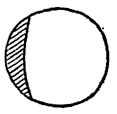
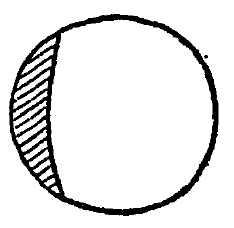

八月三日
晴。絶食、私は絶食しなければならない、食物がないといふ訳ばかりでなく、身心清掃のためにも。――
せめて今日一日だけでもすなほにつつましく正しく暮らしたいと思ふ、その日その日――その時その時を充実してゆくことが一生を充実することである。
黙々読書、おのれに籠つておのれを観た、労れると柴茶をすすつた……
今日も午後はおこぼれ夕立があつた、めつきり涼しくなつて、夜明けは肌寒くさへ感じた、夜無水居を訪ふ。
八月四日
曇―晴。今日も絶食、すこしよろ／＼する、老いたるかなと苦笑する。
空腹をかゝへて出かけた、旅中の 庵を訪ねて奥さんより当面の生活費を少々貸して貰つた、混合米二升――八十二銭――提げて帰ることが出来た、あゝ御飯のおいしさありがたさ、一粒一粒の光明をひし／＼味つた、（まづ仏前に供へて合掌懺悔して、）
私は私の健康を呪ふ、私はあまりに健康だ――健康でありすぎるための脱線、（意志薄弱はどうにもならない私である、）
朝顔―昼顔―夕顔、
或る友へのたより、――
……私はあいかはらず片隅にちゞこまつてあるかなきかの生活をつゞけゐますが、その生活も行き詰つて来ました、私はどうでもかうでも一転歩しなければならなくなりました、のるか、そるか、私は全心全身で私の新生活体制を結成しつゝあります。……
八月五日
晴―曇。早起、私は自から省みて考へる、――私は節度ある生活をうち建てなければならない、ワガママを捨てて規律正しく生きなければならない、私はあまりに気随気儘だつた、私の生活にはムラがありすぎた、省みて疚しくない生活、俯仰天地に恥ぢない生活、アトクサレのない生活――さういふ生活にこそほんたうの安心立命がある。
ちよつとポストまで出かける、途上、野菜を買ふ、大茄子二つ五銭、大胡瓜一本五銭、大根は高くて買へなかつた、（一本二十銭といふ、）
泰山木、その一枝を活ける、私は泰山木のやうな存在でありたいと希ふ、その葉、その花、何と男性的ではないか。
吹く風はまさしく秋、更始一新のこゝろである。
私は醜悪だ、私は愚鈍でありたい、愚に返り愚を守り愚を貫きたい。
八月六日
晴。東が白むのを待ちかねて起きる、まもなく護国神社の太鼓が、とうとうとうと鳴り出した、だいぶ日が短くなつて、もう五時も近からう。
身心沈欝、それをひきたてるべく、ちようど映画宮本武蔵の招待券を貰つたので出かける、しんみり観賞して、いろ／＼考へさせられた、剣は人なり――剣心一路の道はまた私自身の道ではないか、恥ぢる恥ぢる、私には意力がない、あゝ意力がない。
――文は人なり、句は魂なり、魂を磨かないで、どうして句が光らう、句のかゞやき、それは魂のかゞやき、人の光である。
考へれば考へるほど、私は生存に値しないことを痛感する、殊に内外に亘る急迫しつゝある現情勢に於ては、非生産的な私にはかく感じないではゐられないのである。
何が私をさう考へさせるか、――現代には余裕がない、そして私には自信がない！私は私のやうな乞食者ではあつても俳諧報国に一念しつゝあるものにだけは許されるでもあらう消極的価値さへも失ひつゝあるのだ。
私は生きてゐたくないと思ふ、しば／＼死にたいと思ふ、それは生活意力を缺いでゐるからだといつてしまへばそれまでゝあるが、私の弱性がアルコールの魅力によつて自他をごまかしてゐるせいでもある、何といふ弱さ、何といふはかなさ、何といふくだらなさだ！
――転身一路、こゝにのみ、今の私の活路がある、しつかりしろ、山頭火！
八月七日
晴―曇―雨。護国神社の太鼓と共に起床。
いろ／＼洗濯する、同時に句も洗ひだした！連日の謹慎はやゝ沈静にしてくれた。
「忍ぶものは救はるべし」、おちつけおちつけ、落ちついて堪へ忍べ。
銭がないと（それは多くの場合、ふしだらから来る、）心にもない不義理をする、すまないことが多い、今日も電燈料集金員さんに申訳けなかつた、すみませんすみません。
タバコがタバコ屋にだいぶ潤沢に出廻るやうになつた、これだけでも人心がくつろぐ、世上にゆとりの気分がたゞよふ。
私は私の胃袋が大きいことをこのごろことに痛切にあさましく感じないではゐられない、あさましいかな！
よいおしめりがめぐまれた、日にまし涼しくなる、日中は夏、そして夜間は秋だ。
けふはめづらしく句がたくさん出来た、一日三十句は多すぎるが、めつたにないことだ。
過去に執する勿れ、自我を捨てろ、我執放下着。
夜、酔つぱらひが近づいて呼びかけた、私はぢつとして動かなかつた、善哉善哉、其調子其調子！
長生すれば恥多しといふ、あゝ私は生き過ぎてゐる、あまりに恥が多い、恥の多い一生、ただ幸にして、私はまだ恥を失はない。
不眠、明方ちかくまで睡れなかつた、無門関を読んだ。
八月八日
曇―時々微雨、立秋。早朝護国神社参拝、まことに秋である。
朝食ぬきの梅茶一杯。
すこしく沈欝なり、自己沈潜のためか、アルコールを注入しないためか、どちらにしても弱者であることに間違ひはない。
今日はあるだけの外米―一合あまりで、すますより外なかつた。
待つものは与へられん、……私はぢつと待つてゐよう。
空々閑々あつけらかん！これが昨日今日の私の気分である。
今晩も早寝が出来ないので無門関を読む。
無能無才なるが故に、私は一筋の道―句作行―をひたむきに精進することが出来たのである、句作するより外に私の為し得ることはなかつたのである、問題は成し遂げるかどうかにある、私は成し遂げるべく、全心全力を傾けてゐるのである、昨日も今日も、明日もまた。
あれこれ、用事がないであつて、なか／＼忙しい。
日参の旗にはあたまがさがる。……
おとなりにも可愛い七夕竹が立てられた、それを眺めて、私もおさない情緒にひたつた。
――待つともなく待つてゐる――待たないものが来た。
裕君、ありがたう／＼、おめでたう／＼。
街へ、買へるだけ買ふ、酒、米、タバコ、等々々。
道後で一浴、むろん一杯。
ふる／＼、ふるな／＼、一年一度の逢引が駄目になつては気の毒すぎる、世の中には気の毒すぎることが少なくはないが。
今日の酒は悪くなかつた、ほろ／＼、とろ／＼だつた、あぶないことはあぶなかつたらしい。
米代一升分返したゞけで、それだけで私はたいへんおちつけた。
八月十一日
雨―曇。四時ごろ起床。
――反省すれば恥づべき行為ばかりである。
雨、多少の時化模様、このごろの天候は常態ではない。
黙坐沈思、門外不出、――
おとなりから
 子五六顆、かはり夕顔二三枝頂戴する。
子五六顆、かはり夕顔二三枝頂戴する。酒、酒、あゝ酒はいとしい悪魔か、憎らしい天使か、あゝ。
八月十二日
曇―晴。宵から夜明けまでぐつすりと熟睡した、――きのふもけふもつつましくすなほであつた。手足を撫でて、肥えた々々々と思ふ、肥えても痩せても身心の平安が何よりも望ましい。
今日は久しぶりに夏らしく、残暑もさうとうきびしかつた、良寛和尚の口吻を借れば、夏は暑いのがよろしく候。
久しぶりに――半年ぶりに、層雲へ出句、逓友への随筆は書けなかつた、いや、我儘な私は気乗しないので書かなかつた、また一つ嘘をいつた、恥づべし恥づべし。
ポストまで出かけて帰つてゐると、来客二人、灯火骨君と友人、パンとタバコを頂戴したのはうれしかつた。
――純麦飯よりも食パンの方がおいしいことは現前の事実である。
夜ふけるまで不眠、無門関第五則「香巌上樹」、初めて読む公案である。
八月十三日
晴―曇。上海事変三周年記念日。感慨無量、自責の念たへがたきものがあつた。
ぼんやりあたりを眺めてゐると、和尚さんが出かけてゆく托鉢姿が目に入つた、早く借金を返さなければ
きのふ夕顔もよかつたが、けさの昼顔もわるくない、活けてしみ／″＼観賞する。
失望、けふも待ちぼけだつた、――生きぬけ、生きぬかなければならない日本人である。
ポストまで出かけて、あまり出したくもない手紙を投げ入れる。
盆前なのでお墓まゐりが多い、今日はいちにちどんより曇つて蒸暑かつた。
こほろぎが身にちかく鳴くやうになつた。
無門関、第七則、趙州洗鉢。
日本高僧では道元禅師に心酔し、中国高僧では趙州和尚を敬慕する。
八月十五 日
曇―晴。眼がさめるとそのまゝ起きる、おとなりの時計が四つうつた。
こんなに曇つてどんより蒸暑くては稲の虫害が心配になる、――晴れよ晴れよ、照れ照れと祈りつゞける。……
昨夜大食、今朝少食。
どこの店にもマツチが品切れ、タバコの吸へないには少々まゐつた。
泰山木の一枝を貰つて来て庭隅に挿したが、どうぞ根づくやうに、夾竹桃が芽ぶいたやうに。
せめて――いと
おちついて、私は待つてゐる。……
けふはあるだけの麦を炊いた、そしてそれで今日明日を支へやうと考へてゐるところへ、一洵老来庵、なつかしや一ヶ月ぶりの対談である、旅の話を聴く、そしてまた土産代を頂戴する、ありがたう。
午後は道後へ、一浴一杯、そしてまた一杯、――それがいけなかつた、また一杯また一杯でさん／″＼だつた、どろ／＼ぼろ／＼になつてしまつた、あゝ、あゝ。
人間のあさましさよ、そして私の弱さよ、私は倒れたまゝ空を見つめたまゝ自分を罵り自己を鞭うつばかりだつた。……
八月十五日
晴。暗いうちに起きて身辺整理、反省慚愧、自戒自粛。
旧盆十二日、墓参者がたえない。
お米買ひに、醤油買ひに。――
かん／＼照りつける、天地に感謝する。
――もし――もしも私が酒を飲
第七句集到来、雀と鴉とが翼をかさねてやつて来た、緑平澄太の両君に心から頭を下げてお礼を申上げる。
酒はすゝるべし、ビールはあほるべし、それだのに私は酒をあほるのである、酒をあほるところに不幸が生まれるのである。
少くとも今後は断乎焼酎と絶縁する、私には酒が何よりもよい。
人間は嘘をいふ動物なり――しみ／″＼かう感じる。
アル中の徴候があらはれてくる、それはあたりまへすぎる報だけれど、何となく心細くもある。――
日ざかりのポストへ、句集をぽとりぽとりと投げ入れた。
汀居往訪、全不在だつた、句集を置いて戻つた。
よい月夜、寝床で月見、もつたいないな。
今日の買物
○八十二銭 混合米二升。○五銭 切手。○七銭 醤油一合。○五銭 胡瓜一つ。○十銭 イリコ少々。――残金正に一銭也！
八月十六日
晴、時々曇る。四時を過ぎると東雲神社の太鼓、五時ちかくなると護国神社の太鼓が鳴る、その間にいつも私は起床する、――けさもさうだつた。
――どうぞ待つものが来るやうに、――それが来ないと私は申訳けがなくなると祈つてゐたけれど、――とうたう今朝も来なかつた、私はみじめであり、あはれ／＼と溜息を洩らすばかりだつた。――
私が生きてゐる、といふよりも、私が死なないでゐるといふことは、八方の知友から借金する―搾取する―各方面に迷惑をかけるといふことではないか、私はさういふ意図は持つてゐないけれど、事実はさういふ結果を招来しつゝあるではないか、……私は考へてひや／＼する。
遠雷、夕立が来さうで来なかつた、私の気分と一脈相通ずるものがあつた。
全日本中等学校総力大会の熱と力と光にうたれる。
玉峰和尚来庵、真言坊主としては豁達明朗な和尚さんだ。
砂糖が切符制になつてから、坊守さんが「お砂糖はどうしませう」と訊かれる、「甘いものには縁がありません」と私は答へる、私は辛党、甘党君は私の分まで甜めて下さい！
夕方早々散歩しながら汀居往訪、柿の会例会である、会者七人、これはといふ句は出なかつた、真摯なのがうれしい、席上雑話をして月
何となく労れてぐつすり眠つた。
八月十七日
午前晴、午後曇、夜微雨。よう眠れて眼覚めるとすぐ起きたけれどもう六時に近かつた。
盆の十四日、私の盆は淋しいなあ！
――蚊、蝿、蟻、蜘蛛、蜂までが飛びこんでくる。
昨今の残暑のきびしさ。
身辺整理、いや身心整理。
門外不出、反省謹慎、一億一心一徳の心がまへ。
暮れてからすこし驟雨、そしてよい月夜になつた。
貧乏は苦しいものであるが、借金はその苦しみを二重にする。
生活の要諦は――私に関する限りでは――左の三項である。
節度を失はないこと
借金をしないこと
過去に執着しないこと……当来に期待しないこと。
……私は来世を信じない、過去を放下する、私はたゞひたすらに現在を信ずる、即今――永遠の刹那を充実すべく全身心を尽すのである、……宇宙霊を信ずるけれど個人霊を否定する、……個は全から分れ、そしてまた全に合するのである、この意味に於て、生は寄であり死は帰である。……（私の信念として）借金をしないこと
過去に執着しないこと……当来に期待しないこと。
私の食卓はまづしい、しば／＼お菜を缺ぎ、とき／″＼御飯のないこともあるが、その事実はさまで私をかなしませない、私がいつも食卓に対して嘆くことは――私の胃袋が大きい、大きすぎることである、そしてアルコールをほしがることである、一杯やりたいなあと酒貪（！）を起すことである。
ほんに私は無芸大食、貪婪鬼である。
八月十八日
晴、午後小夕立。盆の十五日、私は快く食べ快く睡つた。
けさも待つものは来なかつた、沈静な気持である。
警官殺しの犯人も遂に悪運尽いて、事件発生後十一日の昨朝逮捕された、此地方では珍しい出来事であつた、誰もほつと安堵と快心の吐息を洩らしたことである。
私は昼も夜もしよつちゆう俳句を考へてゐる、夢中句作することもある、俳人といふ以上は行住坐臥一切が俳句であるほど徹底した方がよいと思ふ。
――ともすれば死を思ひ易い、――死を待つ心はあまりに弱い、私は卑怯者！と自ら罵つた。
即今如是如是、自己を求めて不可得、因縁無我、空寂。
私の一日――今日の記録。
無門関、第十二則、巌喚主人。――
第七句集発送の用意をする、用意だけだ、切手代もないから。
お寺の
夕方散歩、ほんにうつくしい満月が昇つた、十分の秋だつた、私はあてもなく歩いたが、何となくさびしかつた、流浪人の寂寥であり、孤独者の悲哀である、どうにもならない事実である。
「閑草談」
俳句性について、――
単純に徹すること。
自己純化――執着――些末に対する――放下 なりきる
生命律――自然律――自由律 ┌自然のながれ
│ リズム
自他融合――主客渾一 身心一如 └生命のゆらぎ
自己純化――執着――些末に対する――放下 なりきる
生命律――自然律――自由律 ┌自然のながれ
│ リズム
自他融合――主客渾一 身心一如 └生命のゆらぎ
全と個（私の一考察）
あらはれ 個を通しての全の表現。
八月十九日
晴。四時すぎには起きた、おだやかな朝明け。
旧盆十六日、藪入。
すこしいら／＼する、私の盆はまさしく原意通りのうらぼん――懸垂苦――だ、米がないし煙草もない！ 腹中清掃だ！
今日は到来の胡瓜でも食べて送らう、きりぎりすのやうに！
嘘の実はなか／＼熟しないな！
よろしい、私は私の愚を守る、私は私の愚を貫かう。
句集整理、発送の用意を整へておく、切手が買へないので。
正直な胃袋がぐう／＼飢を訴へるけれどしやうがない、水を飲め、飲め水を――
空腹をかゝへて乱筆を揮ふ！
何しろひもじいので背に腹はかへられないで、夕方になるとたうとう電燈料を借ることにして、（といふのは、電燈料だけ紙袋に入れて留守でも払へるやうに戸口に近く吊つておいたのだが、）その七十銭でいろ／＼買物をした、――四十銭 混合米、六銭 ハギ、二銭 マツチ、九銭 切手、――路傍に好きな苅萱二三本見つけたので食卓の壺に活ける。
今日はまざ／＼と夕食に於ける自分の貪心を見せつけられた、情状斟酌の余地がないでもないけれど。
身心一如、行解相応、身心自然脱落、本来面目現前、（道元）
花は愛着に散り草は忌嫌に生ず、といふが雑草のよさが解らなければ自然の心は解らない、雑草はおのがじゝそのところを得てそのまことを表現してゐる。
蚊帳の中でゆつくり食事する、そしてすなほに大の字に寝ころぶ、幸福すぎる幸福だつた。
八月二十日
晴。早起、空が何ともいへない美しさだつた。
孤貧に徹せよ、それが私に残されたる唯一の道である。
即景即事即物即心である、あらねばならない。
句作の心がまへとして、――
貪著心を去れ。
身心一如たれ。
すなほであれ、強く強く、細く細く。……
昨日は昨日の風が吹いた、今日は今日の風が吹く、明日は明日の風が吹かうではないか。
今日の今を生きよ、生き
「青原白家酒。三盞喫了。猶道未沾唇」（無門関第十則 清悦孤貧頌）
――来た来た、来ました来ました、ありがたう、ありがたう、さつそく街へ局へ、そして方々へ、――払へるだけ払ひ、買へるだけ買つた。（払ひたいだけは払へない、買ひたいだけは買へない、）
理髪、入浴、散歩、――ああさつぱりした。
酒はうまい、うまいですなあ、――焼酎はいけませんぞ。
一応帰庵して、それから無水居へ、店頭で快談、さらにどんぐり老を訪ふ、夕食をよばれたりして、しやべりすぎた。
夜も散歩して街筋の夜店をひやかした。
夜食がうまかつた、寝酒もあつて。
八月廿一日
晴。早く起きることは起きたけれど多少の宿酔気味、省みて昨日の饒舌が嫌でたまらない、人に逢ふと、とかくしやべりすぎて困る！
Ｓさん、ありがたう、あなたの友情が骨身にしみます。
残暑がとてもひどい、朝晩が涼しいだけそれだけに。
上一万へ、どんぐり老一洵居往訪、俳談しばらく、夕飯まで御馳走になつた、そうめんの御馳走はうれしかつた、おかげで私の盆が盆気分になりました。
夜の散歩、夜店であれこれ買物をした。――
三十銭 ちりめんざこ
五銭 菜葉
十銭 唐辛
八十銭 酒
五十銭 絵本
四十銭 小包料
四十銭 切手
観徳といふ語がある、性を育て徳を養ふのである。五銭 菜葉
十銭 唐辛
八十銭 酒
五十銭 絵本
四十銭 小包料
四十銭 切手
今日は珍らしく遍路が立ち高島易断売が来た。
――書くものは書き、送るものは送り、捨てるものは捨てた、――だいぶ身心整理が出来た。
すなほな、つゝましい一日であつた。
八月廿二日
晴。四時起床、まもなくあちらこちら起きよ起きよの太鼓が鳴りわたる。
夜明けの明星のひかり、一番電車のひゞき、人の足音、水汲む音、――朝の天地は尊くも美しい。
心おだやかにして體ゆたかなり。
蚊もいくらか減つたやうである、だん／＼助かる。
ほんに私は駄腹の持主だわい！
方々へたよりを書く、友はなつかしい、ありがたい。
ままごと風景はおもしろい。
ポストまで出かける。
菜葉を漬ける、あすの朝はおいしい浅漬がいたゞける！
塩の安さ尊さ、安すぎるとさへ思ふ。
今夜初めて鈴虫の唄を聴いた。
油虫がどこからかやつてきて、すばしこくあるきまはつてゐた、私はどうしても油虫にだけは好意が持てない。
……三時前、眼が覚めたので、しばらく読書。
個人と民族、――個性の発揮が民族の高揚となる。
省みて恥ぢ入る事ばかり、自粛せよ、々々々。
老祖母のおもひで果なし、――
どんな竹頭木屑でも粗末にしてはならない。きつと何かに役立つ。
八月廿三日
晴。早起すぎる早起、この朝のよさはどうだ！
おちついてゐたが、やつぱりいけなかつた！
出かける、無水居でうまい焼酎をよばれる、酒を探して（小売店の多くは品切、造酒屋はふりの客には売つてくれない、）やうやく二番町の馴染の店で手に入れる、いろ／＼買物もして、一杯二杯三杯、……酔つぱらつて、和尚さんから少々借りて道後へ、さらに一杯、それからおでん街へ、さらにさらに一杯二杯三杯、泥酔して路傍に倒れてゐるところを運よく通りかゝられたおとなりの奥さんに連れて帰つていたゞいた、いけないいけない、恥づかしかつた、（私自身ははつきり覚えてゐない、）
馬鹿野郎！先夜は交番の厄介になつたではないか、阿呆、年寄は年寄らしく振舞へ、戦時ではないか、しつかりしろ！
あゝすみませんでした。
茗荷一把―五本―七銭は松山としては高すぎるよ、
自信のない生活はだめだ、自分に自信が持てない人間はみじめだ、そしてさういふ私ではないかよ！
八月廿四日
晴―曇、午後小夕立。昨夜の醜態を考へるとたまらない気持である、酒罎をかたむけてぐい飲みする、その元気で隣家へお伺ひしてお詑とお礼を申上げる、句集を差上げて、少しおしやべりする。
一洵老来庵、先日来の酔態狂態を告白する、多少気持がよくなつた、やれ／＼といふ感じである。
澄太君から近著を頂戴する、題して日本の味、それは澄太の味である、しんみり味つた。
夜、無水君来庵、俳句研究九月号を貸してあげる。
人ごとに一つの癖はあるものを――私には酒癖がある、酒を味ふならそれでよろしいのだが、私はハシゴだ、飲みだしたら次から次へと飲み歩いて、泥酔するまで飲みつゞける、……ぐでん／＼の老いぼれはおよそ愚劣の愚劣の愚劣だ！
私は文字通りの無能無才で、人並以上に出来ることが二つ、たつた二つある、一つは句を作ること、他の一つは酒を飲むことである、あさましい存在ではある！
草は生えるがまゝに生えさしておけ、虫の宿もよいではないか。
今日の買物
九銭 バツト 十銭 なでしこ 十五銭 小鰯 壱円三十五銭 酒 七銭 茗荷 三十四銭 干うどん 二十銭 薬 五銭 茄子 十銭 電車賃 六銭 胡瓜 十銭 ハガキ 十弐銭 泥鰌汁 十銭 唐辛 三十五銭 削り節
九銭 バツト 十銭 なでしこ 十五銭 小鰯 壱円三十五銭 酒 七銭 茗荷 三十四銭 干うどん 二十銭 薬 五銭 茄子 十銭 電車賃 六銭 胡瓜 十銭 ハガキ 十弐銭 泥鰌汁 十銭 唐辛 三十五銭 削り節
八月廿五日
雨、午後は曇、後晴。久しぶりの雨、秋雨、はつきり夏から秋への転換である。
今日から米も切符制、一日一合六勺（外米一合、内地米六
昨日も今日もありがたうありがたう、うれしいうれしい。
道後まで出かけてひつかけた、三日分三合たてつゞけに！
一時はかなり降つた、川の水が濁つてたう／＼流れ来り流れ去つた。
こほろぎのうたが冴えて来た、秋がふかむほど冴えてくる。
八月廿六日
曇―晴。日が短かくなつた、蚊もめつきり少なくなつた。
今日から防空訓練。
――秋、秋、新秋来だ。
番僧さんから聞くと、まだ米は切符制にならないさうな。（私はすべて和尚さんまかせ、）
麦を買ふ、米は買へない。
今日の代用食――うどん料理――は失敗した。
あゝあゝ大食大食、無芸なるが故に大食なのだらう。
さすがに厄日ちかい風物、雲のたゞすまひ、風のうごきかたが何となくおだやかでない。
墓場の垣から白い花を採つて来て活けた、何といふ蔓草か、よい香がする。
早寝、電燈も暗くて読書し難いので。
時々砲声がとゞろく、虫がしきりに鳴く、私はぐつすり睡つた。
俳句性管見、――必ずしも形式は内容を規定しないと思ふ、内容が形式を作るともいへる。
純化――純化しきる――一如境
（なりきる） （純情と熱意と）
八月廿七日
晴、時々曇。早起、五時が打つてもまだ暗い、肌寒かつた。防空訓練第二日、砲声虫声。
身心粛然として勉強する、遺言も書きかへておかう。
昼は豆腐買ひに――ヤツコで補足しよう、私の食卓はいつもまづしいけれど壺に投げ挿しの草花が風情を添えてくれる、きのふけふは苅萱の二三本。
さわやかな風が吹いてきて部屋ぬちを浄化する、汚い慾望なんか逃げてしまう！ おゝ一きれの雲影もない大空のたふとさ！
夕方、無水君来訪、俳談閑談しばらく、ほどなく一洵老来訪、九月例会について談合する。籔蚊があまりゐなくなつて大助かり。
今日は下駄を踏み割つたので散歩も出来ない。
ほんによい鈴虫が鳴いてくれる、その声があたりに澄み徹る。
熟睡――私の幸福の一つ。
八月廿八日
秋晴――曇、夕は小雨。四時前起床、朝月のある新涼風景、しばらくして空襲警報のサイレンが鳴りわたつた、そしてなごやかな夜が明けはなれた。
朝のうちはうす寒くて浴衣を重ねたほどだつた。
下駄を買ふ銭がないので門外不出、破れた上草履を繕うて当面の跣足から免かれた。
残暑があとすざりしてゐる、今日の代用食――うどんは悪くなかつた。
「日本の味」読後感二三。――
文は人なり、人は文なり、澄太君の文は澄太君その人である。
澄太君は純綿的性格、スフまじりでない。
つゝましい巨人（肉体的にも）あたゝかにおちついた人物！
酒は私の公案だ、酒を解くことが、酒をほんたうに味ふことが、やがて私の証悟であり悟達である。
夕刻から蚊帳へもぐりこんで、おぼつかないあかりで読書、もつたいないけれど、極楽々々！
蚊帳の中を這ひまはる油虫を叩き殺した、あとの気持がいつまでも不快だつた、おい老いぼれ油虫よ、どこから忍びこんで来たのか、こゝにはお前の仲間はゐないぢやないか。……
八月廿九日
曇。早起、なか／＼明けなかつた。
――ありがたうありがたう、うれしいうれしい。
近衛首相、新体制声明発表、――昭和維新の曙光。
郵便局へ出かける、（はだしで！）まづ下駄を買ふ、それからタバコ、そしてもちろん二三杯！（五日ぶりですね、）その間にマンヂユウ、チクワ、クワシ等々々。
午後、無水君を襲うて長講一席、帰途は大街道へまはつて有楽座見物、気楽な映画でのんびりした、かういふ映画が歓迎されつゝあるといふ事実は、――もとより一部の間で――ちよつと考へさせる。
夕方からまた散歩、一洵老の奥さんに甘えて酒代少々借りる、やたらにそこらを歩いた、空襲警報のサイレンが気味悪く鳴つて真闇である、いつものおでんやへ飛び込む、常連二三人、たあいもないことをしやべつてほろ／＼とろ／＼、十時ごろ無事帰庵、そのまゝぐつすりと寝た。
新体制が結成されつゝあるときに私の今日の行動はのんきすぎるけれどそれが私には唯一のなぐさめであり、たつた一つの贅沢である、平常のつゝましきまづしさにくらべて、どうか赦していたゞきたい！
今日の酒はうまかつた、随つてよかつた、つぶれもしなかつたし、あまりおしやべりもしなかつたし、無駄費ひもしなかつたし、……酔倒れもしなかつたし、落し物もしなかつたし、……よかつた／＼、めでたし／＼、（他人に迷惑といふほどの迷惑をかけなかつたことが何よりもうれしいのである、）
飲むにいそがしかつた山頭火も食ふにあせる彼になつた。
酔ふにもがく山頭火か！
八月三十日
晴―曇、微雨。早々起床、酔はまだ残つてゐるけれど、気はさつぱりしてゐる。
洗濯いろ／＼。
昨夜で防空訓練がすんだので、今日は天も地も人も明るいやうだ、それは単に感じだけではないと思ふ。
午後は雨になつた、秋雨らしく降つたり止んだり、しめやかでよい雨であつた、おちつける。
道後へ出かける、一週間ぶりの湯である、例によつて一浴一杯、うまい／＼。
電燈料新聞代が払へないので困る、気の毒でならない、飲みさへしなければ……かうした迷惑は起らないのに、……
虫声が何ともいへない、寝床に
自己省察、それは私に何をもたらしたか。――
アルコール超克が私の念願であり、義務であり、責任である。
風味（或は雅味）といふ言葉は日本的日本語だ。
今日の買物いろ／＼
七十八銭 酒 十銭 小鰯 二銭 入浴料 十銭 ハガキ 十銭 タバコ・マツチ 八銭 沢庵
七十八銭 酒 十銭 小鰯 二銭 入浴料 十銭 ハガキ 十銭 タバコ・マツチ 八銭 沢庵
八月三十一日
曇―雨。いつものやうに早起、
ありがたう、――街へ、――すこしぼんやりする。
午後、はだしでまた出かける、質の利あげ、二三杯ひつかける。――
月
だめ、だめ、だめである、私もいよ／＼身心建直しの関頭にぶつかつた、しつかり、しつかり、しつかりやらう！
宣誓 われら大御心を奉体し、一切の私心を去り、過去に泥まず、個々の立場に捉はれず、協心戦力もつて新体制確立のため全力を尽くさんことを誓ふ。
これは新体制準備会の誓ひであるが、それはまた日本全国民の誓ひでなければならない、そして私自身の誓ひでもある。
九月一日早朝
山頭火謹記
山頭火謹記
九月一日
曇 微雨。二百十日、興亜奉公日一周年記念日、関東震災記念日。
いろ／＼の意味で、今日は私にとつて意味ふかい日である。
跣足になつて近郊を散歩する、転々一歩一歩の心がまへである。
独行不愧己、独寝不愧衾、
慎独の境地である、私の生きるべき世界である。省みて疚しい私である、俯仰天地に恥ぢない私でなければならないのである。
終日終夜謹慎、身心安定して熟睡することが出来た。
私の覚悟――
節酒断行、借金厳禁、二食実践。
約言すれば、節慾である、生活に即して具体的にいへば、
酒は一日一合、一度に三合以上、一日に五合以上は飲まないこと、酒は啜るべく味ふべく、呷らないこと、微酔以上を求めないこと。借金は決してしないこと、その借金が当面逼迫の融通でないかぎりは、食べ過ぎないこと、代用食を実行すること。煙草も刻ですますやうに努めること。
たゞたゞ実践である、省察が行持となつて発現しなければならない、これを誓ふ、私は私に誓ふ、汝自身を守れ、愚を貫け。九月二日
晴、時々曇。護国の太鼓と共に起きあがる、天地清明、身心寂静。
下の畑に鳴子がこしらへられて、朝早くから鳴らされる、それを聞くと、私にも少年の夢がよみがへる。……
今日から学校が始まつて少年少女が登校する、私も小学生の心で人生第一課から学び直さう！
とにかく放下着放下着、貪心を去れ、貪心を砕け。
朝食なしの早昼飯。
米の切符制実行――番僧さんが私の分まで貰つて来て下さつた、（米代は和尚さんの立換へ）すみません。
一度に五日分の八合（一日一人内米六勺、外米一合の割当）
外米代（一升三十八銭）五合、十九銭
内米代（一升四十五銭）三合、十三銭五厘
合計金 三十二銭五厘也
内米代（一升四十五銭）三合、十三銭五厘
合計金 三十二銭五厘也
あゝ私は蝿や蚊にも劣つてゐる。……
昨今の蒸暑さ、稲のために照込みが欲しいな。
戦時生活は厳粛にしてそして明朗なるべし。
俳句作家の覚書、――
色心不二、物心一如の心境、――即物即心。
随縁随喜の心境、――あるがままをうたへ。終日、門外不出、静読静思。
私の食卓はまづしいよりもとぼしくなつた。夜、百足に二回も螫された、何となく考へさせられた。――
九月三日
晴。早起、朝焼がうつくしかつた。
友よ、ありがたう、すぐ街へ出かける、買物いろ／＼、ひつかけひつかけて！
九月四日
晴。やゝ宿酔気味、省るべし、慎むべし。
兵隊さんよ、あゝ、私は――
たわごとそらごと、まことあるなし、――
脱皮作用、酔
馬鹿、馬鹿野郎！自から罵りつきない、あゝ、――
九月五日
曇、小夕立。郵便局まで出かけた、そして、そして、あゝあゝになつた。
銭がない物がない歯がない一人
さういふ一人がどうといふのだ、恥ぢろ恥ぢろ！汝自身を大地にたゝきつけよ！九月六日
曇、時々微雨あり。謹慎、道後入浴。
今日こそ酒に勝つた、自己を克服した、萬歳。
途上、農家の子弟から茄子を買ふ、六つ五銭也。（安すぎる）
愛情を去れ、好悪を捨てよ、因果無人、即今如是如是。
九月七日
曇、厄日前後らしい時化模様。身心沈欝、自責の念堪へがたし、自粛の実行によつてのみ私は救はれる、最初に、そして最後まで酒を克服せよ、頃日来の醜態はたゞ酒ゆえではないか。
老境――悪夢の残滓、罪悪と悔恨、――私の老境はこんなものだ、感慨無量、――立ちあがれ、老を味へ、ほがらかな老境に入れ、体験を活かすべし。
身心の衰弱を自覚しないではゐられなくなつた。
九月八日
曇―晴。うつ／＼として自己検討。
――どこへ行く、何をする、どうしようといふのだ、どうしなければならないのか、どうせずにはゐられないのか、――飽くまで徹底検討せよ。
西山の宝塔寺拝登、碧師の墓を展す。
朝日山陸軍墓地参拝。
余戸の子規句碑を観る。
九月九日
晴。さびしさにたへきれないので一洵居を訪ふ、それから布佐女を訪ふ。
それからが悪かつた、ぼろ／″＼だつた、どろ／″＼だつた。……
雨―風、臥床、反省、懊悩、懺悔。
強雨、ぶつかけるやうに降つた。
今日も頭があがらない、からだが悪いといふよりも気がとがめて。
九月十二日
晴。道後まで出かける、文字通りの一浴一杯。
夜はどんぐり老が来庵、月がよいので出かけて来たといふ、おそくまで話し合つた、私の気分もだいぶ軽くなつたやうだ。
九月十三日
秋晴。ほんに秋空一碧だつた。
四日ぶりに起床、自粛自戒、身辺整理、身心やゝ軽快なり。
乃木大将忌、将軍の純情は何よりも尊い。
Ｂの使者が来た、微苦笑する外なかつた、（それも酒のためなのだ）使賃を与へ手紙を托する、彼は一風変つた善人らしかつた。
浴衣が二枚とも破れて、一枚は汚れてゐるので、袷を出して着てゐると、暑い暑い、汗を流して辛抱する。
九月十四日
晴。夜中の一時ごろ眼が覚めたので、読書、選句、執筆する、そして五時ごろ、うと／＼してゐるうちに、いやな夢を見た、夢を見ることはわるくないけれど、いやな夢を見るやうでは困る。
日本晴だつた、身心整理、おちついて読書三昧。
自尊心を持て、私は私だけの私ではないぞ。
今日は思ひ立つて前庭の草をむしつた、すつかりきれいにした、それは私自身のからだやこゝろを清めたやうなものであつた。
寝床から月を見る、――私にめぐまれたよろこびである。
米の切符制、それは私を救つてくれた、もう半月も和尚さんが割当米を持つて来て下さる、金は立換へて、――ありがたく、もつたいなし。
九月十五日
晴。早起、護国神社の太鼓が鳴る。……
沈欝、身心の鈍重を覚える。
朝食ぬき、ひよろ／＼のおもひ。
あるだけの麦と馬鈴薯とを煮る、（馬鈴薯にあらず、馬齢者也！）
何となく腹立たしい日なり、死の誘惑に敗けさうな日なり。
休閑地利用といふので和尚さんもダイコクさんも子供も奥さんも賑やかだ、私一人さびしくしてゐる。
腹加減よろしからず、早々蚊帳の中で考へてゐる、まんまるい月が射しこむ、地獄の底の極楽か。……
月が雲にかくれたりあらはれたり、私も悲しんだり微笑んだり、いつしか眠つた。
とにかく快眠ではあつた、幸福々々。
アルコールとして貪らないで酒を味へ。
九月十六日
曇―風―晴。陰暦八月十五日、仲秋名月。
今日は心境やゝ開ける。――
朝食としてぢやがいもを食べる。（米も麦もないから、）
お寺の前庭に休閑地活用の畑が出来た、夫婦共稼ぎ風景！
反古ぼろを売つた、此頃は値下りだが、それでも七十銭、大いに助かつた。
道後へ出かけるつもりだつたが、ポストから引きかへした。
小胡瓜二つ 三銭、中大根一本 四銭。
今日は風があつて涼しい。配給米を今日もまた和尚さんから立換へて頂戴した、恐縮々々。
追憶懐旧たへがたし、古臭くも老いぼれたるかな！
人にそむき世にそむいて、自分にもそむいて。――
あるやうにあらせる――なるやうにならせる――あるがまま――自然法爾。
御飯御飯、あはれ／＼、久しぶりに腹いつぱい白飯をいたゞいた、まことにありがたいことであつた。
仲秋無銭、それは無月よりもさびしかつたことは事実だ、ほんたうのうそといつたやうな。……
秋風の逞ましい蚊が螫すので早々蚊帳の中へ、いつまでも月を観たり本を読んだり考へたりさびしがつたりした。
こんなによい月夜だのに誰も来てくれなかつた、一洵和尚、どうしましたぞ！
放哉坊の句をおもひださずにはゐられなかつた。――
こんなによい月をひとりで観て寝る 放哉
私にも自嘲の句二三ある。
酒はない月しみ／″＼観て居り
蚊帳の中の私にまで月の明るく
あけはなち月をながめつつ寝る
一杯やりたいなあ！ これは自然だ、私の真実だ！蚊帳の中の私にまで月の明るく
あけはなち月をながめつつ寝る
観月感慨無量、戦線をおもひ銃後をかへりみる、遠近親疎、有縁無縁、南無阿弥陀仏。――
夜、空寂にたへないので、そこらをあちこち散歩する、月夜の護国神社に詣でる人影ちらほら、家の中で家内むつまじく月見の人々。
旅情といふか、郷愁といふか、とにかく私は――今夜の山頭火はさびしかつた、芋を食べた、芋は芋だが、じやが芋だつた。――
いつまでも睡れないので――隣りの時計は一時を知らせたのにどうしても睡れないので、「おくのほそ道の記」を読みつゞけた。
明け方になつて、やつと、とろ／＼したら妙な夢を見た、亡弟新婚を訪ねたことなど。……
とにかく節制へ、そして簡素に、そしてそれから枯淡へ。
九月十七日
晴。起ると、隣の時計が五つ鳴つた、山に落ちる月がうつくしかつた。
身心の平静をとりもどした、私は日に日に刻々燈みつつある、と自信し自祝する。
ぽろぽろ冷飯ぼろぼろ秋寒
これは今朝の実感である、実情は偽れない、そこにこそ句の尊さがあるといふものぞ。けさも郵便は来ないのか、あゝあゝ、山頭火みじ
私が若しも――若しもだが――酒をやめることが出来たら私はどんなにやすらかになるだらう、第一、物質的に助かる、食ふや食はずやのその日ぐらしから救はれる、赤字のなやみ、借金のせつなさがうすらぎ、つまらない苦労がなくなる、――だが、私には禁酒の自信が持てない、酒を飲むことが、私にあつては、生きてゐることのうるほひだから！
アル中の徴候がだん／″＼現れてきよる、ああ。
ちよいとポストまで、途上、句を拾ふ、タバコの吸ひさしを拾ふ。
今日の買物は、――
二十六銭 平麦一升 十銭 ナデシコ 六銭 豆腐一丁 五銭 切手
卑しいかな人間、――醜いかな山頭火！風、風、風――秋、秋、秋。
身のまはりをかたづける、自分のエゴイズムを見せつけられたりして。
俳句について、――
┌精神――日本的――不変 ┌構成的
俳句的│ │
└表現――時代――流行 └主体的
完成――作品個々的には、未完成――作家的には、
俳句的│ │
└表現――時代――流行 └主体的
完成――作品個々的には、未完成――作家的には、
御飯を炊きつゝ、いろ／＼さま／″＼のことを考へる。
おゝ何とデカい胃袋、さういふ胃袋の持主――私といふ無能力老人は不幸（あたりまへだけれど）である。
ひしひしと迫るもの、あゝ私は生きてゐられないのだ！
自粛の力――時代の力――そして季節の力。
今夜もよい月、ひとりしづかに読みつゝ考へつゝ寝た。
九月十八日
曇。満州事変十周年記念日、故北白
いつとなく火鉢をしたしく感ずる気分になつて来た、秋の心ともいふべきものゝ一つのあらはれである。
まづしいといふよりもさびしい私の食卓であると思ふ。
護国神社から号令拍手の声がたえない、ぢつとそれに耳を傾けてゐると、故殿下哀悼と東亜新秩序建設の熱意にうたれる。……
一洵老ひさしぶりに来庵――先日来不在中に来庵されたさうだ。――
――近衛首相の念願に和して、私も「一億一心」の念願を堅うする、私はたよりない男であるけれど。――
腹のへること、なんぼでも食べられること、奇々妙々也。
今日からお彼岸の、暑いも寒いも彼岸まで、まことに然り。
快食快眠、うらむらくは快便ならず、（痔がやぶれてゐるから！）
――夢を見た、いやらしい夢だつた、かへりみて恥づかしい夢だつた、聖人夢なしといふ、せめてかういふ夢を見ないやうにありたい。
九月十九日
秋晴。朝寝、起きたのは六時近かつた。
朝食ぬきの梅茶一杯。
虫干――ぼろぼし、黴々―臭々。
秋の蚊いよ／＼ます／＼鋭く迫る、無理もないな。
芋麦混
事変が民衆を叱正する、国家を緊張せしめる、――天意として祝祷すべしである。
早昼食にして芋麦飯数碗、おいしい／＼、ありがたい／＼。
高度国防国家の完成と最低生活の保証とは相即不離であることを痛感する。
足ぶみしても詮なき場合もあるが、（個人でも国家でも、）断じてあともどりしてはならない。
自然と不自然との混合体――それを私自身の中に発見する、たとへば私の孤独に於て。
ほんたうの俳句――俳句らしい俳句ではない――俳句の中の俳句。
夕方から正宗寺へ、子規忌なのでお墓まゐりをした、帰途、汀火骨居を見舞ふつもりだつたけれど、気分が滅入るので、亀屋でうどん二杯食べて（それは夕飯で、その代金十二銭はもつてゐた、）そのまま帰庵、十日ぶりに街へ出かけたのだが、すこしうるさく感じた、そしてつく／″＼視力の弱つたことも感じた、栄養不良のためだらう、いや、ガソリンが切れたせいだらう！
今暁、警鐘乱打に驚かされたが、どこかの小学校が全焼したさうな、誰よりも子供が気の毒だと思ふ。
今夜もよい月夜だつた、熟睡した。
「残老記」
彼岸入は明日ださうである。
今暁の火事は新玉町の民家二十数戸、松山近来の大火だつたさうな。
私もとかく物忘れするやうになり、よく物を間違へる、老いぼれたらしい、年はとりたくないものだとしみ／″＼思ふ。
九月廿日
秋晴、昇る陽たふとし。眼が覚めると暁だつた、鶏声、鼓声、鐘声、おだやかに、おごそかに明けはなれた、――私は合掌黙祷した。
朝寒、火がなつかしい。
朝食としてじやが芋を蒸して食べる。
身心清澄、ちかごろよくねむれるのがうれしい。
百舌鳥が近く来て啼きしきる。
水のうまさ、そして塩のありがたさ。
郵便が――待ちあぐねてゐる手紙が来ないので何となく憂欝、私はほんたうに弱虫だなあ！ 我儘だよ！
おちつけば、おちつくほどさびしいとは、――晴れてまた寂し。
嚢中空しく厨房からつぽとなる。……
貧乏の趣味的鑑賞はよろしくない。
悠々不動の姿勢でありたし。
三食泥酔から二食微酔へ転向。
へりやすい腹の悲哀、そこにユーモアがないでもない。
頑健、あまりに頑健な、持てあます頑健！
自己革新ができなくて何の革新ぞや。
オツチヨコチヨイ気分から脱却せよ。
無水君往訪、不在、干うどんを借りる、和蕾居往訪、小遣を借りる。
七十六銭 外米二升（闇にあらずといへども） 十七銭 焼酎半杯 六銭 醤油一合。
タバコは拾へるが、拾ふ米はない！純外米でも干うどんを少々砕いてまぜるとバラ／＼しないでよい、――これは自炊者としての私の発見だ、簡単にして安価ではないか。
朝夕、秋冷をおぼえる、まつたく秋だ、旅をおもふ。
九月廿一日
曇、小雨、そして晴。早起、ちかごろよくねむれるやうになつて、朝はことに快適なり。
曼珠沙華を活ける、お彼岸気分の一標象である。
和尚さんなか／＼に畑仕事熱心、私は何かにつけて和尚さんの世話になるが、彼我共通のものがあるやうな気がする。
近来、私はつつましく、あまりにつつましく生活してゐる、それは内からの緊縮もあるし、外からの圧迫もあるが、とにもかくにも私は自粛自戒して居る、今後、私は私らしく私本来の生活をつづけるであらう、ただ省みなければならないのは無理をしないといふことである、無理は不自然である、不自然はつゞくものでもなく、またつゞけるものでもない。
天地人に面して懺悔する。
新聞代を督促されて閉口した、無理もない、四ヶ月分もたまつてゐるのだから。
めづらしく宵寝、いろ／＼の夢を見た、とき／″＼眼が覚めて、孤独のおもひが澄みわたつた、身に迫つてちんちろりん、虫もさびしいのだろう！
徳の力――人徳
九月廿二日
秋晴、何ともいへないこゝろよさ、午後は曇る。未明起床、しゆくぜんとして省悟するところがあつた。
郵便が来て――抱壺の訃を通知されて、驚いたことは驚いたけれど、それは予期しないではない悲報であつた、あゝ抱壺君、君は水仙のやうな人であつた、友としてはあまりに若く遠く隔てゝはゐたが、いつぞや君を訪ねていつたときのさま／″＼のおもひでは尽きない――こみあげる悲しさ淋しさが一句また一句、水のあふれるやうに句となつた、――抱壺君、君はよく昨日まで生きてくれた、闘病十数年、その苦痛、その努力、そしてその精進、とてもとても私のやうな凡夫どもの出来ることではない、私は改めて君に向つて頭をさげる、――あゝ逝くものは逝く、抱壺もついに逝つてしまつた、あゝ、――私はひとりしづかに焼香し読経した。――
山野逍遙、哀悼のおもひは果なし、句がたくさん落ちてゐた。
身心沈静、無門関第十一則十二則。
和尚さんよまことにありがたう、――おかげで飢えないでゐられます。
時局がいよ／＼重大であることを痛感する。（十九日には御前会議が開かれたのである。）
午後護国神社参拝、今日はとりわけ参拝者が多い、朝から参拝者がつゞいてたえない。
――貧乏は胃袋を大きくする、――私の体験が生んだ警語である！
けふのゆうべはことにさびしかつた。
明日はどうやら雨らしい、せつかく行楽日、降らなければよいが。（私のためではなく彼らのために）
やつと五銭あつめてナデシコをさがして買ふことができた。
蚊帳なしで寝てみたが藪蚊がとき／″＼襲ふので、また蚊帳を吊つたことである、私は蚊帳がきらひだ。
「松山散策」
ほとんど徹夜で句作推敲した。
今夜もまた百足を殺した、いやな気がした、仕方ないけど。
今日の米代（和尚さん立換）
一日 外米一合 一升 三十八銭
割当 十日分
一人 内米八勺 八合 三十六銭
一日 外米一合 一升 三十八銭
割当 十日分
一人 内米八勺 八合 三十六銭
九月廿三日
曇―時々晴。秋季皇霊祭――彼岸の中日――行楽日和。
起きやうが早すぎてなか／＼夜が明けなかつた。
――一切我今皆懺悔すべきである。
外米もまたおいしい、不平なく、すなほに、慎ましく。
行楽日の行楽人、善哉、善哉。
うれしや、健から着信、（期待した金高でなかつたのを物足らなく思ふとは何といふ罰あたりだらう！）
街へ出かける、ほとんど半月ぶりの街頭散歩である、Ｙ屋で為替券を現金に代へて貰つて、（今日は祭日なので）買へるだけ買つた、そのまへに払へるだけ払つてから。
半月ぶりの飲みつぷりである、一杯二杯三杯――どろ／＼になつたけれどぼろ／＼にはならなかつた、私としてはまづ／＼である。
道後へも行つた、そして十日ぶりの入浴で垢や汚れを洗ひ流した、理髪もした、――さつぱりしたことである。
和尚さんと話した、無水君和蕾君と話した、おでんやのおかみさんとも、めしやのおぢいさんとも話した、……闇取引の話、飲食店反則の話、のんべいの話、等々々。
（日本酒に限る！）
酒はうまい、ほんたうにうまい、うますぎる！猫に小判を与へることは与へられた猫の無智よりも与へた人間の愚を示すのである。
九月廿四日
雨、しめやかな秋雨である。三時ごろ起床、昨日の残物を飲み且つ食べる。
昨日はお寺から団子を頂戴したので、私自身も餅を買へたので、どうやらお彼岸らしくなつたのであつた。
まさに「
まづ借金を整理すること、そのためには酒を慎しまなければならない、禁酒は不可能でも節酒は可能だ。
ぐうたら根性、やけくそ気分を払拭すべし、是非実行すべし。
昨日の返金や買物を記して置かう。――
二円 和尚さんへ返金 二円 米代 二円四十銭 新聞代 四十二銭 無水居へうどん代
二円四十銭 酒代 三十銭 タバコ 八銭 線香 十銭 シヤボン 十銭 ひじき
十五銭 マツチ 五十二銭 押麦 八銭 シヨウガ 四十銭 削節 二十銭 パン 二十銭 餅 二十四銭 醤油 十五銭 味噌
二円四十銭 酒代 三十銭 タバコ 八銭 線香 十銭 シヤボン 十銭 ひじき
十五銭 マツチ 五十二銭 押麦 八銭 シヨウガ 四十銭 削節 二十銭 パン 二十銭 餅 二十四銭 醤油 十五銭 味噌
めづらしく胃腸のぐあいがよろしくない、きのふのけふだからあたりまへなのだが。
けさは袷でもうそ寒く袖ナシをかさねた。
手紙三通書く、抱壺へ、柊屋へ、満洲へ、かなしい手紙なり、恥づかしい手紙なり。……
和尚さんを襲うていろ／＼話す、さびしい日で、ひとりではやりきれないので。
まづ焼酎を厳禁す、焼酎はうまくない、たゞ酔ふのみなり、心理的にも生理的にも有害なり、焼酎は私にはほんに悪魔なり。
雨傘がないからお寺の傘を借りて郵便局へ出かける、ちよつと一杯ひつかけたり！
さらにまたポストへ、また一杯ぐうつとひつかけました！鈍栗庵の愛息が自転車で栗飯を持つて来てくれる、さつそく御馳走になる、感謝々々。
白菜二把六銭、すぐ洗つて漬ける。
Ｋ屋のおかみさん来庵、すまなかつた、梯子酒のあとくされである。
今日は純日本米、昨日は純支那米、明日は。――
夕方虚春君来訪、兄の酒癖を矯めるべく御祈祷を頼みに来たさうな、酒封じの祈祷とは皮肉だ、和尚さんも微苦笑せられたらう！
いつとなく晴れて星空となつた。
今夜も蚊帳なしで寝た、のび／＼と睡つた。
十月一日
曇―時々小雨。興亜奉公日、国勢調査日、防空綜合訓練第一日。
陰暦の九月朔日。
早起、護国神社参拝、自粛自戒。
身のまはりを整理する、いつ死んでもよいやうに。――
おちついてしづかに読書する。
いつのまにやら風邪をひいたらしく、咳が出て洟水が落ちて困る。
去年の今日だ、松山へ渡つて来て、そして一洵老に初見参したことは忘れてゐない、忘れてなるものか、もう一年になる、早いといふよりあはたゞしい歳月ではあつた。
門外不出、誰にも会はず、一文も費はず、ひたすら謹慎する。
風邪心地なので早寝、うと／＼眠りつゞけた。
十月二日
曇、百舌鳥啼きしきり、どうやら晴れさうな。早起したれど、頭おもく胸くるしく食慾すゝまず、ぼんやりしてゐる。
むしろ私としては病痾礼讃、物みな我れによからざるなしである。
ちよつとポストまで、途中慣習的にいつもの酒屋で一杯ひつかけたが、つい／＼二杯となり三杯となり、とう／＼一洵老の奥さんから汽車賃を借りだして、今治へとんだ、……電話したら清水さんがしんせつにも仕事を遣り繰つて来てくれた、御馳走になつた、ずゐぶん飲んだ、（Ｆ館の料理には好感が持てた、）何しろ防空訓練で、みんな忙しくて、誰も落ちついてゐないから、またの日を約して十時の汽車で上り下り別れて帰つた、帰途の暗かつたこと、闇を踏んで辿るほかなかつた、そしてアル中のみじめさをいやといふほど感じさせられたのである、……Ｓさんありがたう、ほんにありがたう、小遣を貰つたばかりでなく、お土産まで頂戴した。
帰庵したのは二時に近かつた、あれこれかたづけて寝床にはいつたのは三時ごろだつたらう。
犬から貰ふ――この夜どこからともなくついて来た犬、その犬が大きい餅をくはえて居つた、犬から餅の御馳走になつた。
ワン公よ有難う、白いワン公よ、あまりは、これもどこからともなく出てきた白い猫に供養した。
最初の、そして最後の功徳！犬から頂戴するとは！

最初の、そして最後の功徳！犬から頂戴するとは！

┌餅屋の餅
│直径五寸位
└色やゝ黒く
│直径五寸位
└色やゝ黒く
十月三日
雨―曇。少々朝寝、何しろ労れたことである、風邪気分。
昨日の私とＳさんとの会談を考へると、うれしくもあり恥づかしくもある、懺悔々々、感謝々々。
和尚さんに返金し、米代を払ひ、一洵老の奥さんに返金し、麦を買ふ、それから二三杯あほる、すつかり酔つた、酔つたことは酔つたが、酔ひつぶれはしなかつた。
宵から寝たが、燈火管制不十分とあつて青年監視人から叱られた。
俳句性について、――
印象の象徴化（刹那の永遠、全と個）
結晶（圧縮にあらずして単純なり）
身心の純化、平明にして透徹。
核心、焦黙 、求心的。
私の不幸は私が頑健でありすぎることから生じると思ふ。結晶（圧縮にあらずして単純なり）
身心の純化、平明にして透徹。
核心、焦
十月四日
日本晴、申分のないお天気だった［＃「だった」はママ］。訓練第四日、防空訓練もいよ／＼本格的、もんぺ部隊に感心する、青年監視人に感謝する。
感冒解消、めでたくもあり、めでたくもなし、といふところ。
午後、市街散歩、市人の訓練振を見学する、ついで無水居に寄つて俳談一くさり。
先日来、だいぶだらしがなかつた、今日は酒を慎しみ気持を引きしめて勉強した、善哉、々々。
十月五日
快晴、まつたく秋晴である。未明起床、早朝より空襲警報鳴りわたる、何となく落ちつかず。
午前中は引き籠つて読書、午後は久しぶりに道後へ、鬚を剃り垢を落してさつぱりした、いつも一浴一杯だが、今日は一浴だけで一杯は遠慮した。
至るところお祭前の風景、子供がさわぎまはつてゐる。
お祭でも私にはお祭はない、小遣があつて気分のよい日はいつでも私のお祭である、私の食卓のまづしさは、お祭に於て、かへつてまづしさを増すのである！
松茸が安くなつた、まだ出盛りではないけれど、下物四十銭、上物八十銭になつた。
焼松茸で一杯やりたいなあ！
ゆふべ散歩して、しみ／″＼した
夜は防空訓練がすんだので落ちつけるとよろこんでゐたら、ぬくいので藪蚊が来襲してさん／″＼だつた、――でも更けて冷えてきてからはゆつくり読み書きが出来た。
十月六日
晴―曇。今日明日は松山地方の秋祭。
和尚さんの温言――お祭りのお小遣が足りないやうなら少々持ち合せてゐますから御遠慮なく――とわざ／＼いつて来られたのである、――温情、身に
 む温情、あゝありがたしともありがたし。
む温情、あゝありがたしともありがたし。――忘れ
澄太が一草庵と名つけて［＃「名つけて」はママ］くれた、一木一草と雖も宇宙の生命を受けてひたすらに感謝の生活をつゝけてゐる［＃「つゝけてゐる」はママ］、感謝の生活をしろよとは澄太の心であつたのであらう。
一草庵―狭間の六畳一室、四畳半一室、厨房も便所もほとよく［＃「ほとよく」はママ］してある、水は前の方十間ばかりのところに汲場ポンプが［＃「汲場ポンプが」はママ］ある、水質は悪くない、焚物は裏から勝手に採るがよろしい、東に北向だから、まともに太陽が昇る、――此の頃は少し右に偏つてはゐるが――月見には申分がない。
東隣は新築の護国神社、西隣は古刹龍泰寺、松山銀座へ七丁位、道後温泉へは数丁、どんぐり庵へは四丁――友人はみな親切、――すべての点に於て私の分には過きたる［＃「過きたる」はママ］栖家である、私は感泣して、すなほに慎ましく私の寝床をこゝに定めてから既に一年にならうとしてゐる、――それに、それに。――
［＃改ページ］
感じた、……帰庵すると御飯を野良猫に食べられてゐた。
夜は防空訓練がすんだので落ちつけるとよろこんでゐたら、ぬくいので籔蚊が来襲してさん／″＼だつた、でも更けて冷えてきてからはゆつくり読み書きができた。
十月六日
晴―曇。今日明日は松山地方の秋祭。
和尚さんの温言――お祭のお小遣が足りないやうなら少々持ち合せてゐますから御遠慮なく、とわざ／″＼いって［＃「いって」はママ］来られたのである、――温情、あゝありがたしありがたし、――人には甘えないつもりだけれど、いづれまた、すみませんが――とお願ひすることだらう、あゝあゝ。
けさは猫の食べのこしを食べた、先夜の犬のことをもあはせて雑文一篇を書かうと思ふ、いくらでも稿料が貰へたら、ワン公にもニヤン子にも奢つてやらう、むろん私も飲むよ！
十月七日
曇のち晴。早朝護国神社参拝、感謝慎しみの心が湧く。感謝！感謝！感謝は誠であり信である、国への感謝、国に尽くした人、尽くしつゝある人、尽くすであらう因縁を持つて生れ出る人への感謝、母への感謝、我子への感謝、友人への感謝、宇宙霊への―仏―への感謝。一洵が師匠の空覚聖尼からしみ／″＼と教へられたといふ感謝、懺悔、精進の生活道は平凡ではあるがそれは慥かに人の本道であるとつく／″＼思ふ、この三道は所詮一つだ、懺悔があれば必ずそこに感謝があり精進があれば必ずそこに感謝がある筈だ、感謝は慥悔と［＃「慥悔と」はママ］精進の娘である、私は此の娘を大切に心に育くんで行かなければならぬ、そして感謝の心で死んでゆきたい、その感謝――誠の心から生れた芸術であり句でなければ本当に人を動かすことは出来ないであらう。澄太や一洵にゆつたりとした落ちつきと、うつとりとしたうるほひが見えて居て何か知ら人を動かす力があるのは此の心があるからだと思ふ。
感じた、……帰庵すると御飯を野良猫に食べられてゐた。
夜は防空訓練がすんだので落ちつけるとよろこんでゐたら、ぬくいので籔蚊が来襲してさん／″＼だつた、でも更けて冷えてきてからはゆつくり読み書きが出来た。
十月六日
晴―曇。今日明日は松山地方の秋祭。
和尚さんの温言―お祭りのお小遣が足りないやうなら少々持ち合せてゐますから御遠慮なく――とわざ／＼いつて来られたのである、――温情、あゝありがたしともありがたし、昨年一洵老に連れられて此処新居へ移つて来た、御幸山麓御幸寺境内の隠宅――高台で閑静で家も土地も清らかであり市街や山野の遠望も佳い――が殊に和尚さんにその人を得た。たゞ感謝あるばかりである。
澄太が一草庵と名づけてくれた、一木一草と雖も宇宙の生命を受けて感謝の生活をつづけてゐる、感謝の生活をしろよとは澄太の心であつたのであらう。
一草庵―狭間の六畳一室、四畳半一室、厨房も便所もほどよくしてある、水は前の方十間ばかりのところに汲場ポンプが［＃「汲場ポンプが」はママ］ある、水質は悪くない、焚物は裏から勝手に採るがよろしい、東に北向だからまともに太陽が昇る、（此頃は右に偏つてはゐるが）月見には申分がない。
東隣は新築の護国神社、西隣は古刹龍泰寺、松山銀座へ七丁位、道後温泉へは数町、一洵どんぐり庵へは四丁、友人もみな、親切――、すべての点に於て、私の分には過ぎたる栖家である。私は感謝して、すなほにつゝましく私の寝床をこゝに定めてから既に一年にな
感謝の生活、私は本当にそれを思ふ。
十月七日
曇―晴。早朝和尚さんに逢ふ、――昨日はどうでした、お祭りのお小遣はありますかと言ふてくれた――勿体なし勿体なし、人には甘えないつもりだけれど、いづれまたすみませんが――とお願ひすることだらう、あゝあゝ。
けさは猫の食べのこしを食べた、先夜の犬のことをもあはせて雑文一篇を書かうと思ふ、いくらでも稿料が貰へたら、ワン公にもニヤン子にも奢つてやらう、むろん私も飲むよ！
犬から餅の御馳走になつた話、――
十月八日
――晴。早朝護国神社参拝、十日、十一日はその祭礼である、――暁の宮は殊にすが／＼しく神々しい、なんとなく感謝、慎しみの心が湧く、感謝、感謝！感謝は誠であり信である、誠であり、信であるが故に力強い、力強いが故に忍苦の精進が出来るのであり、尽きせぬ喜びが生れるのである。
皇室――国への感謝、国に尽くした人、尽くしつゝある人、尽くすであらう因縁を持つて生れ出る人への感謝、母への感謝、我子への感謝、知友への感謝、宇宙霊―仏―への感謝。――
一洵老が師匠の空覚聖尼からしみ／″＼教へてもらつたといふ懺悔、感謝、精進の生活道は平凡ではあるがそれは慥かに人の本道である――と思ふ、この三道は所詮一つだ、懺悔があれば必ずそこに感謝があり、精進があれば必ずそこに感謝があるべき筈である、感謝は懺悔と精神との娘である、私はこの娘を大切に心の中に育くんでゆかなければならぬ。
芸術は誠であり信である、誠であり信であるものゝ最高峰である感謝の心から生れた芸術であり句でなければ本当に人を動かすことは出来ないであ
夜、一洵居へ行く、しんみりと話してかへつた、更けて書かうとするに今日は殊に手がふるへる。